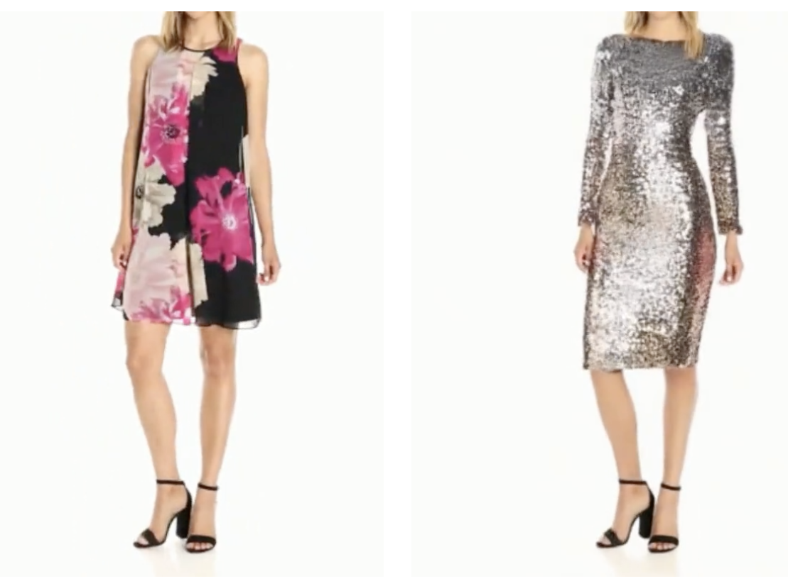
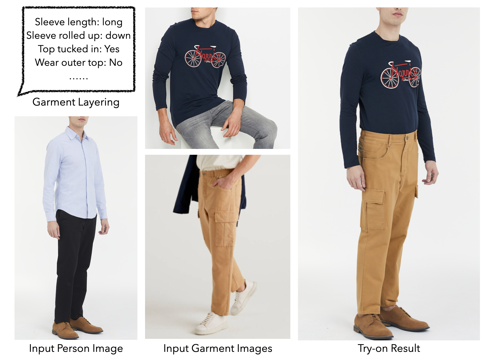
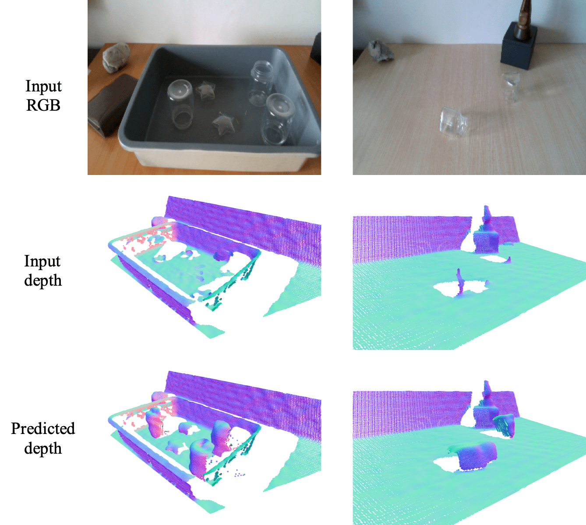
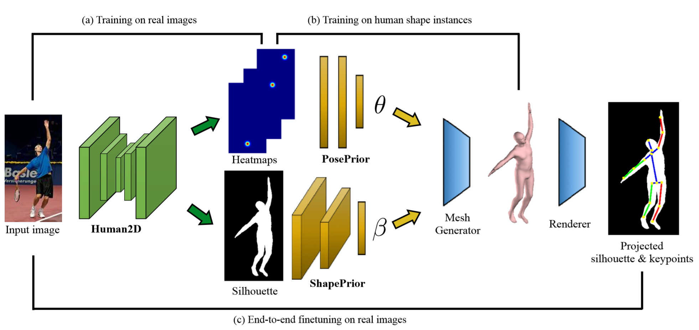

Member of Technical Staff
World Labs
Email
CV
Google Scholar
I am a member of technical staff at World Labs.
My research interests are in computer vision and graphics, focusing on 2D and 3D generative models.
I received my Ph.D. at the University of Washington in 2024,
co-advised by Ira Kemelmacher-Shlizerman,
Steven Seitz and
Brian Curless.
I was a student researcher at Google from 2022 to 2024, during which my virtual try-on projects were published and
launched as products.
Before that, I obtained my B.S. degree at Peking University in 2018,
advised by Prof. Yizhou Wang.
Publications
|  |
Fashion-VDM: Video Diffusion Model for Virtual Try-On
[paper]
SIGGRAPH Asia 2024 |
|  |
M&M VTO: Multi-Garment Virtual Try-On and Editing
[paper]
CVPR, 2024 (Highlight) |
 |
TryOnDiffusion: A Tale of Two UNets
[paper]
CVPR, 2023 |
|  |
RGB-D Local Implicit Function for Depth Completion of Transparent Objects
[paper]
[code]
CVPR, 2021 |
|
Reconstructing NBA players
[paper]
[code]
[dataset]
ECCV, 2020 (Spotlight Presentation) |
|  |
Learning to Estimate 3D Human Pose and Shape from a Single Color Image
[paper]
CVPR, 2018 Invited to 3D HUMANS, CVPR Workshop, 2018 (Best Poster Award) |